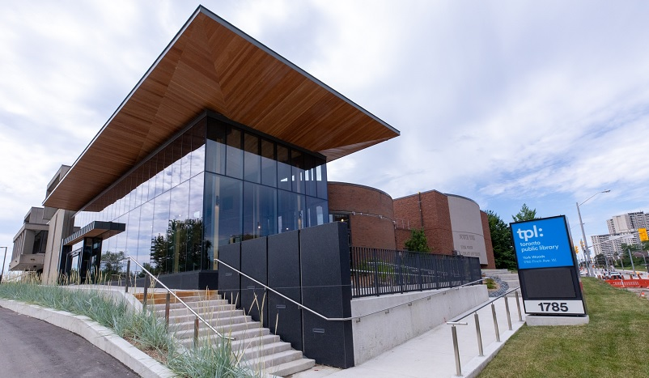

Toronto Public Library: York Woods
Canadian Nationals 2025 will be held in the performance theatre in the York Woods branch of Toronto Public Library. For more information about the library, visit the Toronto Public Library website.
The event will be open to the public with no admission fees for spectators.

Location
1785 Finch Avenue West
Toronto, ON M3N 1M6
416-395-5980
The nearest subway station is Finch WEST station (not to be confused with Finch Station). From Finch West station, the library can be reached by either a 20-minute walk or by bus 36 west bound which stops at Tobermory Drive.
